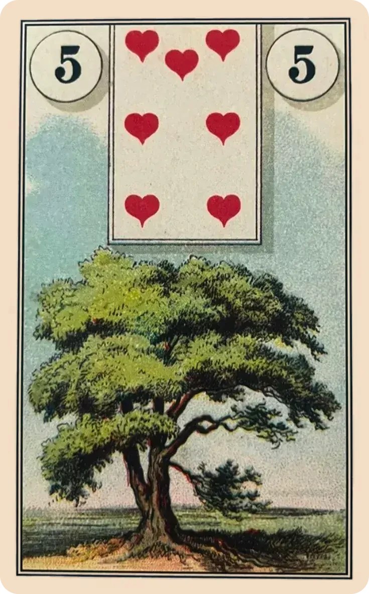

Einfühlsames KI-Orakel
Stelle eine Frage zu Liebe, Beruf oder einem allgemeinen Thema und erhalte eine stimmige, tiefgehende Deutung deiner Kartenkombination.
Ziehe deine tägliche Tageskarte, entdecke alle 36 traditionellen Lenormand-Symbole und erhalte einfühlsame Deutungen vom KI-Orakel für Liebe, Beruf und allgemeine Lebensfragen.
Konzentriere dich auf eine Frage oder Intention und tippe auf die Karte, um eine symbolische Botschaft aufzudecken.
Entwickelt für ruhige Klarheit und Tiefe – sowohl für die tägliche Selbstreflexion als auch zum Erlernen der klassischen Kartensymbolik.
Stelle eine Frage zu Liebe, Beruf oder einem allgemeinen Thema und erhalte eine stimmige, tiefgehende Deutung deiner Kartenkombination.
Decke jeden Tag deine persönliche Tageskarte auf – auf Wunsch mit sanfter täglicher Erinnerung für einen bewussten Moment.
Durchstöbere die vollständige Galerie oder die ruhige Karussell-Ansicht mit verständlichen Erklärungen zu jedem Symbol.
Gestalte deine Legungen mit dem neuen Japanischen Zen-Deck (Sumi-e), Mystisches Gold, Verzauberter Wald, Himmlisch, Vintage-Rose und mehr.
Karten und Bedeutungen stehen auch ohne Internet bereit. Deine Legungen bleiben lokal auf deinem Gerät – ohne Login-Zwang.
Erstelle stilvolle Kartenbilder zum Teilen mit Freunden und nutze die App auf Deutsch, Englisch, Portugiesisch, Spanisch, Französisch oder Italienisch.
Entdecke liebevoll gestaltete Illustrationen für intuitives Kartenlegen und vergleiche die verschiedenen Kartendecks der App.
 01 · Der Reiter
Nachrichten & Dynamik
01 · Der Reiter
Nachrichten & Dynamik

05 · Der Baum Gesundheit & Wurzeln 24 · Das Herz
Zuneigung & Wärme
24 · Das Herz
Zuneigung & Wärme
 25 · Der Ring
Verbindung & Treue
25 · Der Ring
Verbindung & Treue
 31 · Die Sonne
Klarheit & Erfolg
31 · Die Sonne
Klarheit & Erfolg
 33 · Der Schlüssel
Lösungen & Öffnung
33 · Der Schlüssel
Lösungen & Öffnung
Über 10.000 Nutzer begleiten ihren Alltag bereits mit der Tageskarte, klaren Bedeutungen und dem KI-Orakel auf Android.